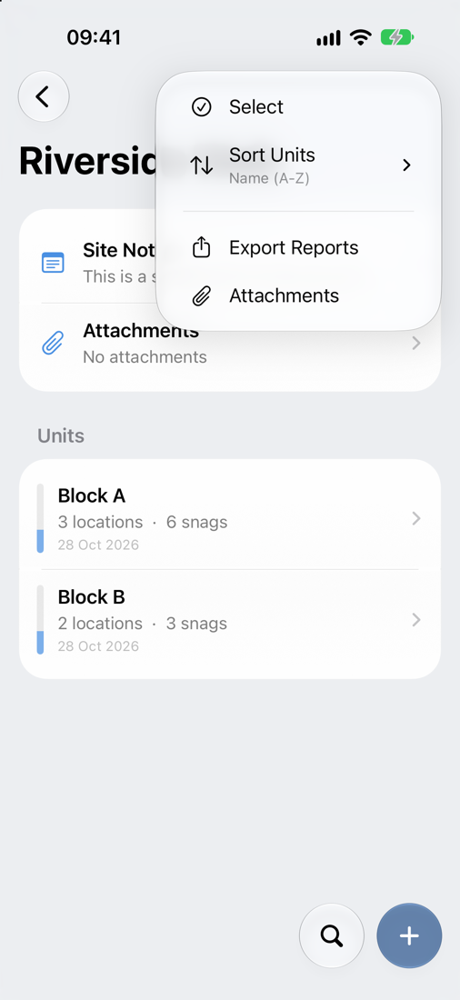

Getting Started
This page covers how Snaglite is laid out, how to move around it, and what to set up before you use it on a live project.
The first launch
The first time you open Snaglite, a short Welcome Guide explains the main features. You can reopen it at any time from Settings → Help → Open Welcome Guide.
Snaglite also creates a Sample Site with two units, a few locations and some example snags. Have a look around it to see how everything fits together. When you are ready, swipe left on the sample site and delete it.
Snaglite is a subscription app. New subscribers can start with a free trial where one is offered. Plans are shown in the app before you subscribe.
Finding your way around
Every list screen in Snaglite uses the same controls:
- + (bottom right) adds a new item at the current level – a site, unit, location or snag.
- Search (the magnifying glass next to +) searches the current level and everything below it.
- ⋯ (top right) opens the menu for that screen. This is where you will find Select, Sort, Filter, Export, Attachments and Settings.
- Swipe a row left or right for quick actions, and press and hold a row for more options.
When you select several rows, the ⋯ menu switches to the bulk actions for that screen, such as Set Status, Assign or Move. Tap the tick to finish.
If you delete something by mistake, an Undo banner appears for a few seconds at the bottom of the screen.

Before using Snaglite on a live project
- Enter your company name and logo, and the inspector name, in Settings. These appear on your reports.
- Add the assignees you expect to use regularly.
- If you issue a third type of report, such as an end of defects period inspection, set its title in Settings → Reports.
- Create a site and fill in its defaults (client, contractor, address and inspection date) so new units pick them up automatically.
- Export a test PDF report on your device before relying on it on site.
- Make a backup and check where it is saved.
Typical workflow
- Create a site
- Add one or more units
- Add locations within each unit, or copy them from a unit with the same layout
- Add any drawings and reference documents
- Record snags with photos, notes, status, priority and assignee
- Update snags as work progresses
- Export a PDF report or CSV when needed
Good practice
- Use clear, consistent names for sites, units and locations
- Avoid vague labels such as ‘Room’ or ‘Area’ where a more specific name is available
- Take photos at the time of inspection
- Keep snag titles short, factual and specific
- Back up regularly if the data matters
- Export important reports promptly after inspections